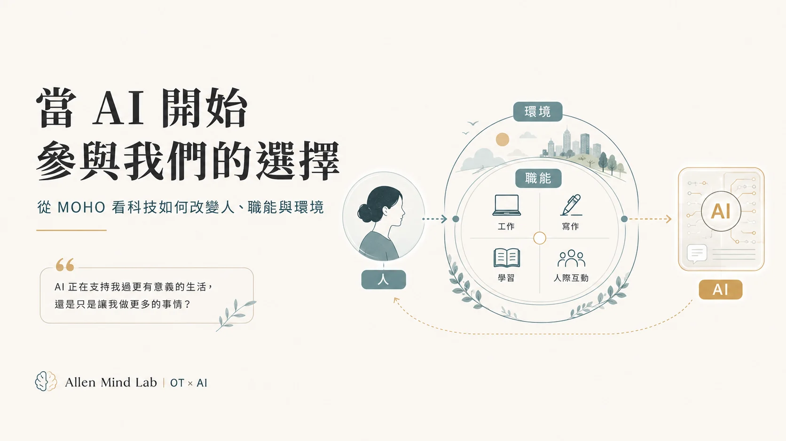

人不是一組功能數值
能力、動機、角色、價值、經驗與生命歷程，都會影響一個人如何投入生活。
在 Allen Mind Lab，職能治療不是六個主題中的其中一格，而是一個基底視角： 理解人如何在環境中形成選擇、建立習慣、發揮能力，並參與對自己有意義的生活。
職能治療讓我不只看「功能缺了什麼」，也持續追問： 一個人想做什麼、習慣怎麼形成、能力如何被環境支持或限制， 以及這些日常活動對他而言究竟有什麼意義。
能力、動機、角色、價值、經驗與生命歷程，都會影響一個人如何投入生活。
同一件事情對不同的人可能代表完全不同的意義；重要的是它如何進入生活與角色。
支持、制度、工具、空間與他人回應，都可能讓一個人的能力被看見，也可能讓參與變得更困難。

從 MOHO 的意志、習慣化、表現能力與環境出發， 重新思考生成式 AI 如何進入人的工作、判斷、選擇與日常職能生活。
當我們真正從人的生活出發，行為、教學、系統設計、科技與身心狀態就不再是彼此分離的問題。
AML 的 OT 視角也延伸到研究、出版、教學與制度實務： 不只累積知識，而是持續問「這些知識如何回到人的生活裡被使用」。
依 Articles 的正式分類同步收錄；同一篇文章可能屬於多個領域。想跨主題搜尋，可回到 Articles 總館。
情緒行為穩定不是服務的終點。真正的轉銜，是找出有效的支持條件，把能力、策略與支持網絡帶進下一段生活，讓新的環境逐漸有能力承接改變，陪一個人繼續往前走。
閱讀文章 →從需求、專業與組織三個面向重新思考 OT 服務發展：做得到不等於最適合做，真正成熟的服務發展，是在有限資源中選出最值得投入的方向。
閱讀文章 →從澳洲 NDIS 行為支持者調查出發，探討諮詢型支持與情支中心密集介入的銜接，以及服務對象、照顧者、環境資源、轉銜期程與高風險家庭服務網絡。
閱讀文章 →讓責任、資源與團隊成長形成良性循環。從有限理性、資源合作到公平當責與人員發展。
閱讀文章 →從共同方向、授權與領導風格，到組織變革與持續發展，理解如何讓職能治療團隊共同前進。
閱讀文章 →讓職能治療服務有系統地運作，從管理五大功能、SOP 到持續改善，建立可執行、可追蹤的專業服務系統。
閱讀文章 →從專業執行者走向管理者，理解職能治療服務背後的目標、資源、團隊、品質與組織支持。
閱讀文章 →從 MOHO 看 3C 到 AI：科技如何從延伸行動，走進人的能力、 習慣、判斷、選擇與職能生活。
閱讀文章 →OT & Human Occupation 是 Allen Mind Lab 的一個核心起點。 從這裡，可以繼續走向 PBS、教育、管理、AI 與身心福祉。
Explore Articles →